Щоденно
- Божественна Літургія — 09:00
- Особиста і спільна молитва
- Духовний супровід за потребою
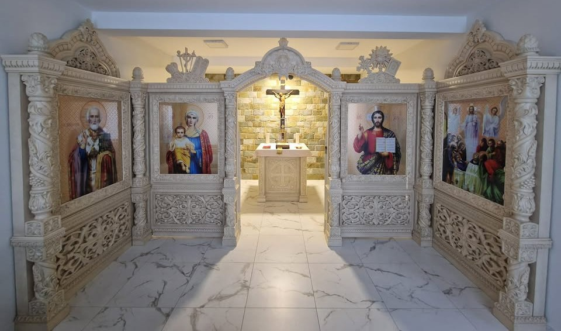
Ласкаво просимо
Місце молитви, Божої присутності, духовної надії та живої спільноти у серці Кишинева
Історія, проваджена Божим Провидінням
У 1994 році, з ініціативи кардинала Любомира Гузара, до Молдови прибув священник о. Роман Поправка, щоб дбати про духовне життя місцевої греко-католицької спільноти. Його служіння стало початком живої присутності Церкви, знаком того, що Господь Сам піклується про Свій народ, посилаючи пастирів туди, де вони найбільше потрібні. У 1999 році декретом Апостольського адміністратора Антона Коші він був призначений відповідальним за душпастирство греко-католиків у країні.
У 2006 році греко-католицька спільнота була офіційно зареєстрована державою. Це стало ще одним свідченням того, як Боже Провидіння відкриває дороги там, де їх, здавалося б, немає. Але навіть без власного храму життя Церкви тривало: у неділі Божественна Літургія звершувалася в каплиці «Матері Доброго Пораду» при кафедральному соборі «Божественного Провидіння». Там збиралися вірні, щоб разом молитися, зростати у вірі та відчувати себе однією родиною у Христі.
З 13 червня 2013 року на парафії розпочав служіння як сотрудник-вікарій священник о. Ігор Плевський. Його душпастирський шлях став продовженням цього Божого діла. Через його служіння поглиблювалося духовне життя спільноти, розширювалася пастирська опіка, зростала кількість людей, які шукають Бога. Поступово сформувалася також друга спільнота — з місцевого населення, що стало явним знаком того, що зерно віри приносить плід і вкорінюється на цій землі. Його служіння стало живим свідченням жертовної любові, посвяти та вірності покликанню.
У 2023 році, з Божої ласки, вдалося придбати квартиру, частину якої після праці та старання було переоблаштовано в каплицю. Це стало справжнім даром — місцем, де щоденно возноситься молитва, де людина зустрічається з Богом, де народжується і зміцнюється віра.
28 вересня 2024 року каплицю було урочисто освячено єпископом Степаном Сусом у присутності єпископа Антона Коші. Цей день став радісним підтвердженням того, що Сам Господь будує Свою Церкву, збираючи людей, благословляючи їхній шлях і освячуючи їхні труди.
Сьогодні парафія продовжує зростати й розвиватися, об'єднуючи людей різних культур і національностей. Вона стала живим духовним центром, де через молитву, Божественну Літургію та служіння ближньому відкривається дія Божої благодаті.
Це історія, в якій ясно видно Боже Провидіння. Історія, написана жертовністю священників і вірою людей. Історія живої Церкви, яку веде Сам Господь.
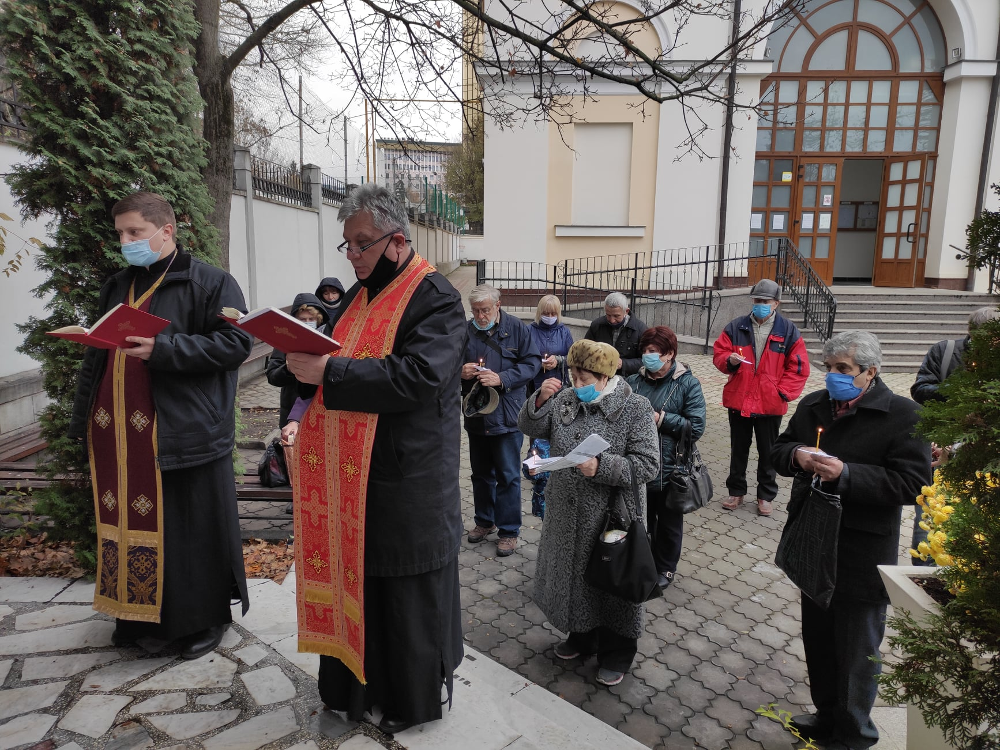
Про парафію
Парафія Успіння Пресвятої Богородиці є греко-католицькою спільнотою візантійського обряду в Кишиневі, де поєднуються вірність церковній традиції, відкрите серце до людини та жива парафіяльна присутність.
Тут вірні збираються на Божественну Літургію, молитву, катехизацію, духовні зустрічі та братнє спілкування. Парафія прагне бути місцем, де людина знаходить мир, підтримку, правду Євангелія та шлях до внутрішнього оновлення.
Наша спільнота дбає про дорослих, молодь, дітей, сім'ї, духовний супровід, соціальне служіння та свідчення християнської надії у сучасному світі.
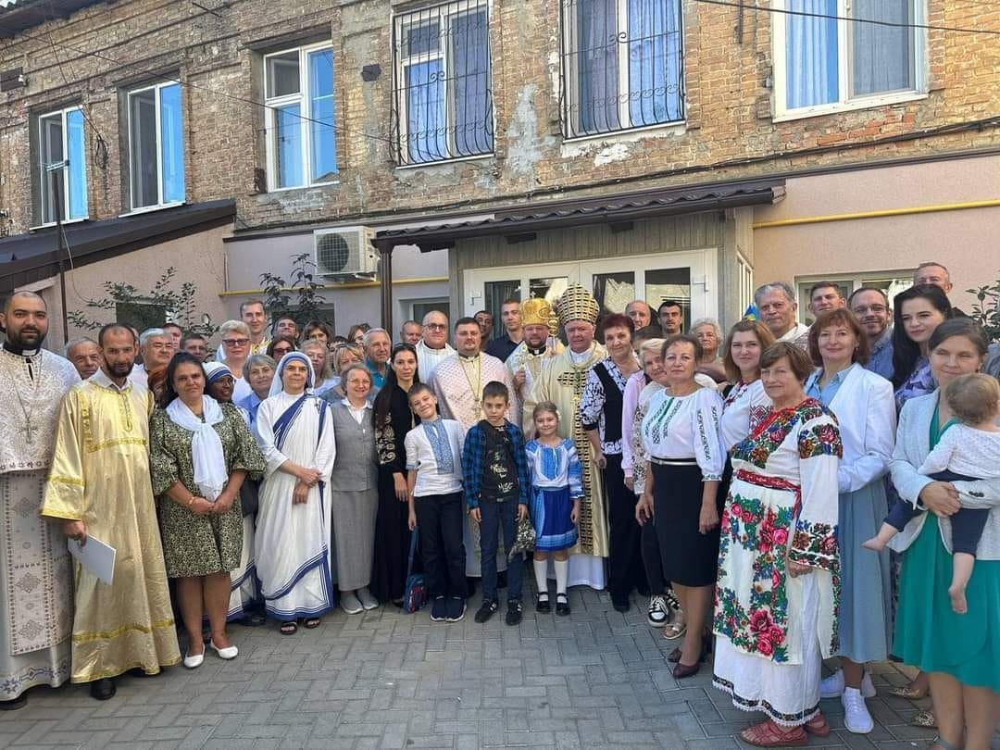
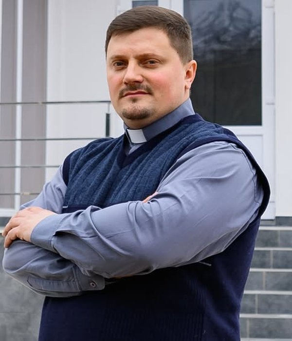
Настоятель парафії
Служить у парафії з 13 червня 2013 року
Отець Ігор звершує богослужіння, проводить катехизацію, духовно супроводжує вірних та служить парафіяльній спільноті у щоденних і святкових подіях церковного життя.
Його пастирське служіння спрямоване на те, щоб кожна людина відчула себе прийнятою, почутою і укріпленою у вірі, а парафія ставала місцем молитви, миру і відновлення серця.
Парафія під його проводом прагне поєднувати літургійну глибину, людське співчуття, духовну тверезість та відкритість до потреб сучасної людини.
Пастирська програма
Рік молитви, формації, єдності та служіння ближнім
Пастирська програма 2026
Рік молитви, формації, єдності та служіння ближнім
«Жити силою Святого Духа і служити з любов'ю»
Духовні ресурси
Повний текст Святого Письма для читання, молитви та щоденного духовного роздуму.
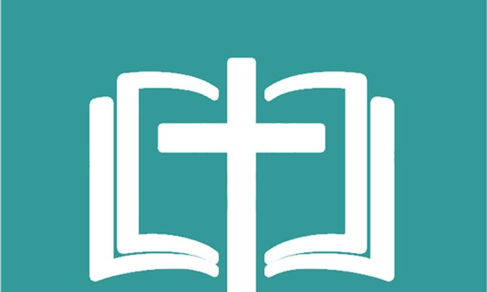
Літургійний календар із церковними святами, читаннями та ритмом церковного року.
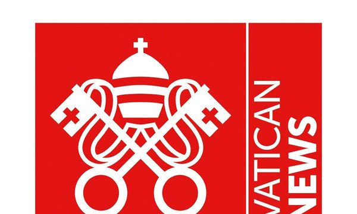
Новини Вселенської Церкви, Святішого Отця та життя Католицької спільноти у світі.
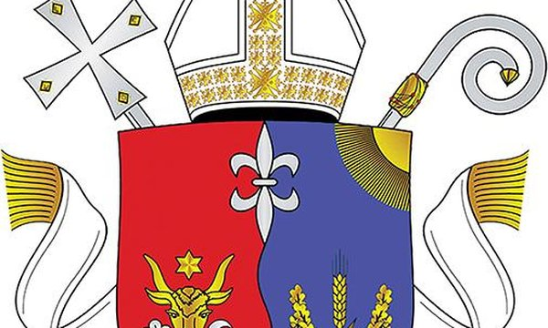
Новини, події та офіційна інформація про католицьке життя в Молдові.
Літургійне життя
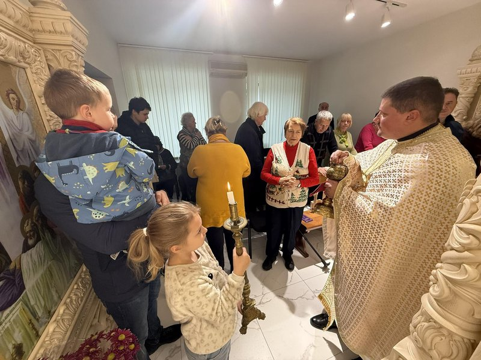
Євхаристія є серцем парафіяльного життя, джерелом сили, миру і єдності для всієї спільноти.
Вечірнє богослужіння, що освячує завершення дня та дарує мир і спокій.
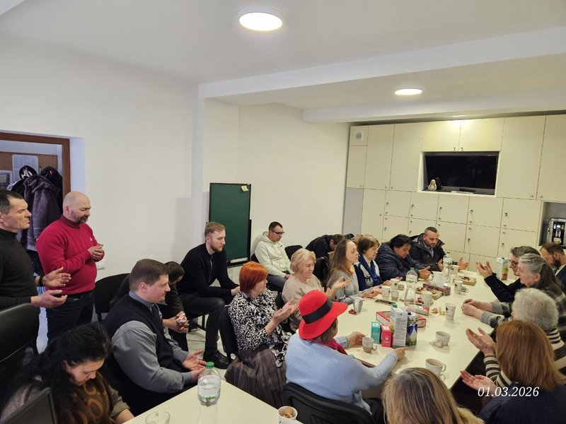
Ранкова молитва прослави Бога на початку нового дня.
Парафіяльне життя
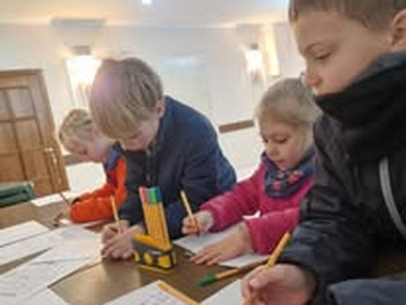
Навчання у вірі допомагає глибше пізнавати Бога, зрозуміти Церкву і жити Євангелієм у щоденності.
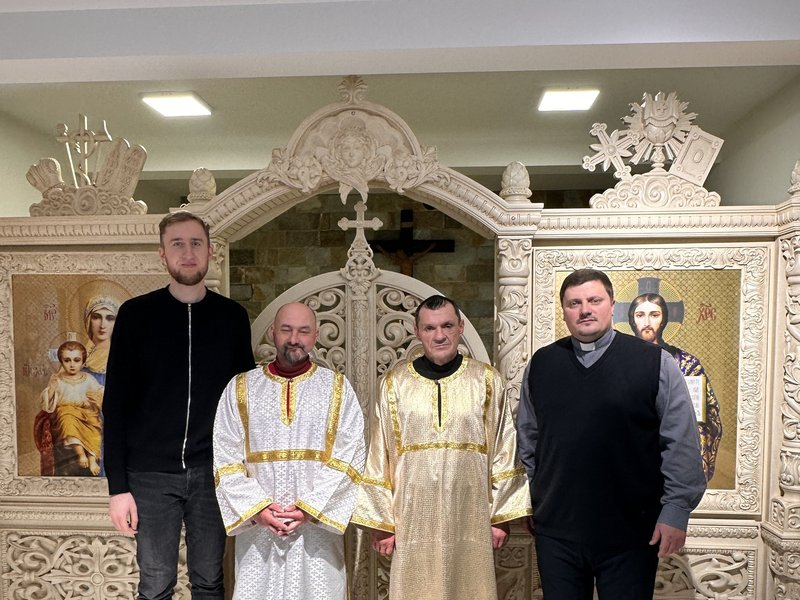
Служіння при вівтарі виховує відповідальність, пошану до святині та любов до літургії.
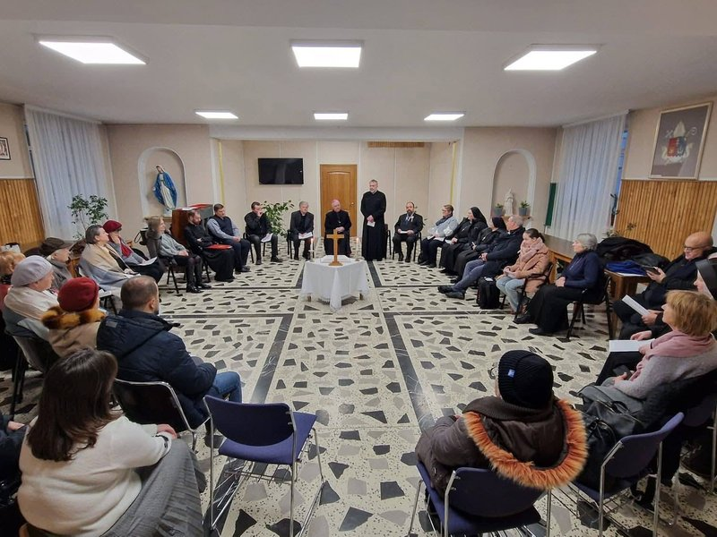
Зустрічі та молитва з іншими християнами свідчать про пошук єдності, взаємної поваги та миру.
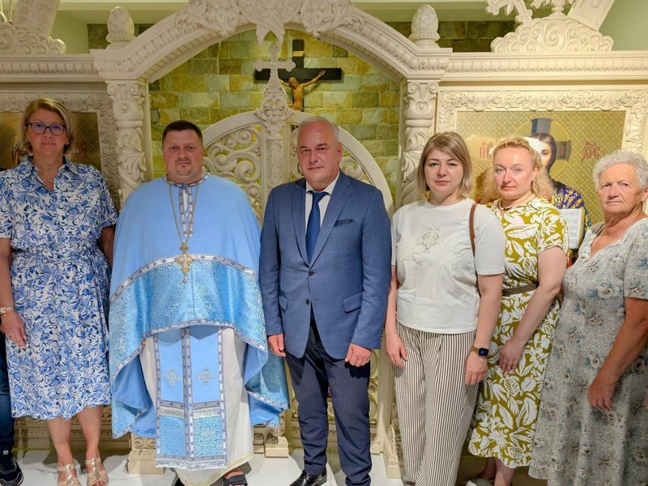
Парафія активно співпрацює з Посольством України та проводить молебні служби за мир в Україні, підтримуючи українську спільноту Молдови у молитві, надії та пастирській турботі.
Милосердя до ближнього є живим свідченням віри, коли Церква стає місцем підтримки, відновлення і надії.
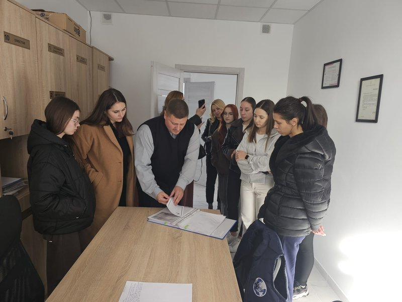
Діалог з молодим поколінням допомагає говорити мовою надії, відповідальності та внутрішньої свободи у Христі.
Фотогалерея
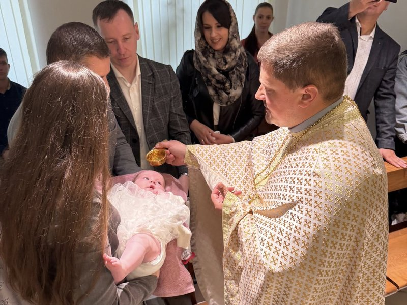
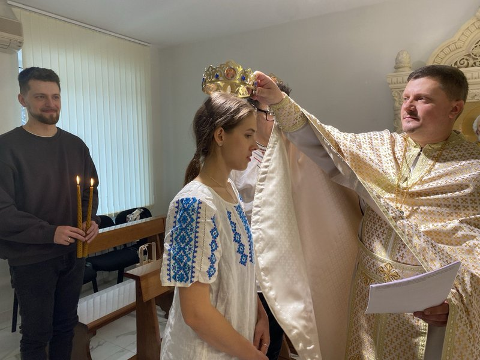
Молитовна скарбниця
Відкрийте картку — і молитовний текст буде з вами. Зручно для молитви вдома і під час богослужіння.
Прокинувшись, стань благоговійно, уяви себе перед лицем Бога і з почуттям кажи:
В ім'я Отця і Сина і Святого Духа. Амінь.
Господи Ісусе Христе, Сину Божий, молитвами Пречистої Твоєї Матері і всіх святих, помилуй мене грішного (грішну).
Ранкове славослів'я
Прославляю Тебе, Боже мій, і люблю Тебе всім серцем. Дякую Тобі за те, що Ти створив мене, зробив мене християнином і зберіг від смерті цієї ночі. Тобі віддаю всі мої сьогоднішні вчинки — нехай вони будуть Тобі угодні і слугують Твоїй славі. Збережи мене від гріха і всякого зла. Нехай благодать Твоя завжди перебуває зі мною і моїми близькими. Амінь.
Прохання добре прожити цей день
Господи, Боже Всемогутній, Ти дозволив мені дожити до нового дня: зміцни мене благодаттю Твоєю. Допоможи мені сьогодні в кожному ближньому побачити гідність дітей Божих і вміти виявити їм любов. Допоможи мені творити навколо себе атмосферу доброзичливості й радості. Нехай мої думки й учинки виражають волю Твою. Через Христа, Господа нашого. Амінь.
Молитва Господня
Отче наш, що єси на небесах, нехай святиться Ім'я Твоє, нехай прийде Царство Твоє, нехай буде воля Твоя, як на небі, так і на землі. Хліб наш насущний дай нам сьогодні; і прости нам провини наші, як і ми прощаємо нашим винуватцям; і не введи нас у спокусу, але визволи нас від лукавого. Амінь.
Символ Віри
Вірую в єдиного Бога Отця, Вседержителя, Творця неба і землі, і всього видимого і невидимого. І в єдиного Господа Ісуса Христа, Сина Божого, Єдинородного, від Отця рожденного перед усіма віками, Світло від Світла, Бога істинного від Бога істинного, рожденного, не сотвореного, єдиносущного з Отцем, що через Нього все сталося. Він задля нас, людей, і нашого ради спасіння зійшов із небес, і воплотився з Духа Святого і Марії Діви, і став людиною. І був розп'ятий за нас за Понтія Пилата, і страждав, і був похований, і воскрес у третій день, згідно з Писанням. І вознісся на небо, і сидить праворуч Отця. І вдруге прийде зі славою судити живих і мертвих, а Його Царству не буде кінця. І в Духа Святого, Господа животворного, що від Отця і Сина ісходить, що з Отцем і Сином рівнопоклоняємий і рівнославимий, що говорив через пророків. В єдину, святу, соборну і апостольську Церкву. Ісповідую одне хрещення на відпущення гріхів. Очікую воскресіння мертвих і життя майбутнього віку. Амінь.
Молитовні воззвання (Вірую, Надіюсь, Люблю, Каюсь)
Вірую: Боже мій, Ти є безпомилкова Істина, вірую в усе, що Ти відкрив нам, і в що свята Церква велить нам вірити. Вірую в Тебе, єдиного істинного Бога в трьох рівних і самосущих Особах: Отця і Сина, і Святого Духа. Вірую в Ісуса Христа, Сина Божого, що вочоловічився задля нас, помер на хресті та воскрес, Який кожній людині воздасть по заслугах. Господи, зміцни мою віру.
Надіюсь: Боже мій, уповаю на те, що за обітницею Твоєю і заслугами Спасителя нашого, Ісуса Христа, Ти за добротою Своєю даруєш мені вічне життя і благодать, необхідну для того, щоб я заслужив це життя добрими вчинками. Господи, нехай я вічно радію Тобою.
Люблю: Боже мій, люблю Тебе всім серцем і понад усе, бо Ти є нескінченне благо і вічне наше щастя! Люблю Тебе, Боже, в моєму ближньому — зроби, щоб я ще більше полюбив Тебе.
Каюсь: Боже мій, я всім серцем скорблю про мої гріхи, бо, вчинивши гріх, я заслужив Твоє покарання і образив Тебе, нескінченно Благого. З Твоєю допомогою зобов'язуюсь надалі уникати спокус і не ображати Тебе. Господи, зміцни мене!
Щоденне препоручення трудів Богові
Боже, Господи і Творче всесвіту, я віддаю Тобі всі мої сьогоднішні праці і через них хочу виразити мою любов до Тебе, до Церкви Твоєї, до моєї сім'ї і всього світу. Допоможи мені виконувати їх з радістю, ніби я беру участь у Твоєму ділі творення. Нехай ця праця послужить освяченню моєї душі і благу інших людей. Я приймаю всі пов'язані з нею страждання як співпричастя хресту Ісуса. Господи, Твоєму Всеблагому Серцю препоручаю всіх безробітних, убогих і нещасних людей. Свята Маріє, мій Ангеле-Охоронителю і всі святі, моліться за мене. Амінь.
В ім'я Отця і Сина і Святого Духа. Амінь.
Царю Небесний, Утішителю, Душе істини, що всюди єси і все наповняєш, Скарбе дібр і життя Подателю, прийди і вселися в нас, і очисти нас від усякої скверни, і спаси, Благий, душі наші.
Святий Боже, Святий Кріпкий, Святий Безсмертний, помилуй нас. (3 рази)
Подяка і прохання про прощення
Боже, ось минув ще один день мого життя. Кожна мить, прожита мною, була подарована Тобою: чи то я працював, чи відпочивав, спілкувався з людьми чи був наодинці, радів чи сумував — все було Твоїм даром.
Дякую Тобі за все, що мені довелося пізнати і пережити сьогодні. Ти один знаєш, чи зумів я виконати Твою волю. Прости мені все те, в чому я недобачив, про що забув, за все, що не було по волі Твоїй. Помилуй мене, грішного. Дозволь, нехай нічний відпочинок примножить у мені сили, щоб я міг краще прожити завтрашній день. Опікуй усіх сплячих і тих, хто працює цієї ночі. Все майбутнє моє і моїх близьких вручаю Твоїй милосердній турботі, наш Боже і Отче. Амінь.
Господи Боже наш, усе, що я згрішив у цей день словом, ділом чи думкою, Ти, як Благий і Чоловіколюбець, прости мені. Мирний і спокійний сон даруй мені. Ангела Твого Охоронителя пошли мені, щоб заступав і охороняв мене від усякого зла. Амінь.
Слався, Цариця (Salve Regina)
Слався, Цариця, Матір милосердя, життя, утіхо і надіє наша, слався. До Тебе взиваємо, вигнані чада Єви. До Тебе зітхаємо, стогнучи і плачучи у цій долині сліз. О Заступнице наша! До нас зверни Твої милосердні погляди і після цього вигнання яви нам Ісуса, благословенний плід чрева Твого. О лагідна, о добра, о солодка Діво Маріє.
До Ангела-Охоронителя
Святий Ангеле Божий, охоронителю і покровителю душі моєї! Перебувай завжди зі мною, вранці, ввечері, вдень і вночі, направляй мене на шлях заповідей Божих і відганяй від мене всі спокуси зла. Амінь.
Пригадай, о Всемилосердна Діво Маріє
Пригадай, о Всемилосердна Діво Маріє, що від віку ніхто не чував про те, щоб хтось із тих, хто вдавався до Тебе, просив Твоєї допомоги, шукав Твого заступництва, був Тобою залишений. Сповнений такої надії, приходжу до Тебе, Діво і Матір Всевишнього, зі смиренням і скрухою про мої гріхи. Не зневаж моїх слів, о Матір Предвічного Слова, і благосклонно почуй прохання моє. Амінь.
Молитва перед сном
Господи, Царю Небесний, Духу істини і душе душі моєї, поклоняюся Тобі і молю Тебе: наставляй мене, зміцнюй мене, будь моїм провідником і вчителем, навчи мене тому, що мені слід робити. Прийми мій сон, моє бдіння і кожну мить наступної ночі. Однього тільки прошу у Тебе: навчи мене завжди творити волю Твою. Амінь.
Розклад
| День | Час | Богослужіння |
|---|---|---|
| Понеділок – Субота | 09:00 | Божественна Літургія |
| Неділя та Свята | 09:00 | Божественна Літургія |
| 10:30 | Божественна Літургія |
Сповідь проводиться перед або після Літургії, або за домовленістю з настоятелем.
Підтримка парафії
Ваша пожертва допомагає підтримувати храм, катехитичні програми та благодійні проєкти нашої спільноти.
Контакти
str. Mitropolit Bănulescu-Bodoni 22, ap. 4
Chișinău, MD-2012, Moldova
Натисніть, щоб запалити свічку